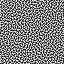

<!DOCTYPE html><html lang="en"><head><title>SimonAKing</title><meta charset="utf-8"><meta name="viewport" content="width=device-width,initial-scale=1,maximum-scale=2"><meta http-equiv="X-UA-Compatible" content="IE=edge,chrome=1"><meta name="renderer" content="webkit"><meta name="theme-color" content="#222325"><meta name="apple-mobile-web-app-status-bar-style" content="#222325"><meta name="msapplication-navbutton-color" content="#222325"><link rel="stylesheet" href="https://cdn.jsdelivr.net/gh/SimonAKing/font/font.min.css"><link rel="stylesheet" href="css/style.css"><link rel="stylesheet" href="https://unpkg.com/@material-tailwind/html@latest/styles/material-tailwind.css"><link rel="stylesheet" href="https://cdnjs.cloudflare.com/ajax/libs/font-awesome/5.15.2/css/all.min.css" integrity="sha512-HK5fgLBL+xu6dm/Ii3z4xhlSUyZgTT9tuc/hSrtw6uzJOvgRr2a9jyxxT1ely+B+xFAmJKVSTbpM/CuL7qxO8w==" crossorigin="anonymous"><meta http-equiv="x-dns-prefetch-control" content="on"><link rel="dns-prefetch" href="https://cdn.jsdelivr.net"><link rel="prefetch" href="https://cdn.jsdelivr.net/"><meta name="description" content="Author:SimonAKing,Category:Personal Blog"><link rel="icon" href="favicon.ico" type="image/x-icon"><link rel="shortcut icon" href="favicon.ico" type="image/x-icon"><!--[if lt IE 9]><style>.alert { padding: 15px; margin-bottom: 20px; border: 1px solid transparent; border-radius: 4px } .alert-danger { background-color: #f2dede; border-color: #ebccd1; color: #a94442; border-bottom: 1px solid #ebccd1 } .alert-link { color: #843534; font-weight: bold } .topframe { margin: 0; padding-left: 15px; padding-right: 15px; text-align: center; border-radius: 0; position: fixed; left: 0; right: 0; top: 0; z-index: 1000 }
</style><div class="alert alert-danger topframe">你的浏览器实在<strong>太太太太太太旧了</strong>，放学别走，升级完浏览器再说<a class="alert-link" target="_blank" href="http://browsehappy.com">立即升级</a></div><script src="https://cdn.bootcss.com/html5shiv/r29/html5.min.js"></script><script src="https://cdn.bootcss.com/respond.js/1.4.2/respond.min.js"></script><![endif]--></head></html><body><main><div class="content content-intro"><div class="content-inner"><canvas id="background"></canvas><div class="wrap fade"><h2 class="content-title">洋来社</h2><h3 class="content-subtitle" original-content="Welcome to younger world">&nbsp;</h3><audio id="bgAudio" autoplay loop preload="auto" src="https://memosfile.qiangtu.com/audio/yanglaishe/%E6%B4%8B%E5%93%A5%E6%9D%A5%E7%8E%A9.mp3"></audio><a class="enter">enter</a><div class="arrow arrow-1"></div><div class="arrow arrow-2"></div></div></div><div class="shape-wrap"><svg class="shape" width="100%" height="100vh" preserveAspectRatio="none" viewBox="0 0 1440 800" xmlns:pathdata="http://www.codrops.com/"><path d="M-44-50C-52.71 28.52 15.86 8.186 184 14.69 383.3 22.39 462.5 12.58 638 14 835.5 15.6 987 6.4 1194 13.86 1661 30.68 1652-36.74 1582-140.1 1512-243.5 15.88-589.5-44-50Z" pathdata:id="M -44,-50 C -137.1,117.4 67.86,445.5 236,452 435.3,459.7 500.5,242.6 676,244 873.5,245.6 957,522.4 1154,594 1593,753.7 1793,226.3 1582,-126 1371,-478.3 219.8,-524.2 -44,-50 Z"></path></svg></div></div><div class="content content-main"><div class="relative -mx-4 flex items-center justify-between py-3"><div class="w-60 max-w-full px-4"><div class="navbar-logo flex items-center w-full py-5 cursor-pointer"><span class="text-black logo dark:text-white py-1.5 header-logo-text whitespace-nowrap font-semibold">千逐的个人博客</span></div></div><div class="flex items-center gap-4 justify-end pr-16 lg:pr-0"><nav class="hidden lg:block" id="navbarCollapse"><ul class="block space-y-1 lg:flex lg:space-y-0 2xl:ml-20"><li class="group relative"><a class="block w-full px-4 py-3 text-base font-medium text-gray-900 dark:text-gray-100 rounded-lg" href="https://www.waytoagi.com/zh" target="_blank">🌈WaytoAGI知识库</a></li><li class="group relative"><a class="block w-full px-4 py-3 text-base font-medium text-gray-900 dark:text-gray-100 rounded-lg" href="about/" target="_self">关于我</a></li><li class="group relative"><a class="block w-full px-4 py-3 text-base font-medium text-gray-900 dark:text-gray-100 rounded-lg" href="https://x.com/" target="_blank">X主页</a></li></ul></nav></div></div><div id="card"><div class="card-inner fade"><header><h1 data-translate="name">SimonAKing</h1><h2 id="signature" data-translate="signature">Code &amp; Input &amp; Output</h2></header><ul><li><a href="blog/" aria-label="Blog"><i class="icon icon-bokeyuan"></i><span data-translate="Blog">Blog</span></a></li><li><a href="about/" aria-label="About"><i class="icon icon-xiaolian"></i><span data-translate="About">About</span></a></li><li><a href="mailto:hi@simonaking.com" aria-label="Email" target="_blank"><i class="icon icon-email"></i><span data-translate="Email">Email</span></a></li><li><a href="https://github.com/SimonAKing" aria-label="Github" target="_blank"><i class="icon icon-github"></i><span data-translate="Github">Github</span></a></li></ul></div></div><canvas class="grid-background" id="gridCanvas"></canvas><div class="cards"><div class="container mx-auto px-4 py-8"><div class="grid grid-cols-1 sm:grid-cols-2 lg:grid-cols-3 gap-8 justify-items-center"><div class="relative flex w-96 flex-col rounded-xl bg-white bg-clip-border text-gray-700 shadow-md"><div class="relative mx-4 mt-4 h-80 overflow-hidden rounded-xl bg-white bg-clip-border text-gray-700 shadow-lg"></div><div class="p-6 text-center"><h4 class="mb-2 block font-sans text-2xl font-semibold leading-snug tracking-normal text-blue-gray-900 antialiased">博客说明</h4><p class="block bg-gradient-to-tr from-pink-600 to-pink-400 bg-clip-text font-sans text-base font-medium leading-relaxed text-transparent antialiased">博客内容简介</p></div><div class="flex justify-center gap-7 p-6 pt-2"><a class="block bg-gradient-to-tr from-blue-600 to-blue-400 bg-clip-text font-sans text-xl font-normal leading-relaxed text-transparent antialiased" href="blog/"><i class="fab fa-facebook" aria-hidden="true"></i></a><a class="block bg-gradient-to-tr from-light-blue-600 to-light-blue-400 bg-clip-text font-sans text-xl font-normal leading-relaxed text-transparent antialiased" href="blog/"><i class="fab fa-twitter" aria-hidden="true"></i></a><a class="block bg-gradient-to-tr from-purple-600 to-purple-400 bg-clip-text font-sans text-xl font-normal leading-relaxed text-transparent antialiased" href="blog/"><i class="fab fa-instagram" aria-hidden="true"></i></a></div></div><div class="relative flex w-96 flex-col rounded-xl bg-white bg-clip-border text-gray-700 shadow-md"><div class="relative mx-4 mt-4 h-80 overflow-hidden rounded-xl bg-white bg-clip-border text-gray-700 shadow-lg"></div><div class="p-6 text-center"><h4 class="mb-2 block font-sans text-2xl font-semibold leading-snug tracking-normal text-blue-gray-900 antialiased">王自如 VS 罗永浩</h4><p class="block bg-gradient-to-tr from-pink-600 to-pink-400 bg-clip-text font-sans text-base font-medium leading-relaxed text-transparent antialiased">经典辩论复盘</p></div><div class="flex justify-center gap-7 p-6 pt-2"><a class="block bg-gradient-to-tr from-blue-600 to-blue-400 bg-clip-text font-sans text-xl font-normal leading-relaxed text-transparent antialiased" href="about/"><i class="fab fa-facebook" aria-hidden="true"></i></a><a class="block bg-gradient-to-tr from-light-blue-600 to-light-blue-400 bg-clip-text font-sans text-xl font-normal leading-relaxed text-transparent antialiased" href="about/"><i class="fab fa-twitter" aria-hidden="true"></i></a><a class="block bg-gradient-to-tr from-purple-600 to-purple-400 bg-clip-text font-sans text-xl font-normal leading-relaxed text-transparent antialiased" href="about/"><i class="fab fa-instagram" aria-hidden="true"></i></a></div></div><div class="relative flex w-96 flex-col rounded-xl bg-white bg-clip-border text-gray-700 shadow-md"><div class="relative mx-4 mt-4 h-80 overflow-hidden rounded-xl bg-white bg-clip-border text-gray-700 shadow-lg"></div><div class="p-6 text-center"><h4 class="mb-2 block font-sans text-2xl font-semibold leading-snug tracking-normal text-blue-gray-900 antialiased">AI 导航</h4><p class="block bg-gradient-to-tr from-pink-600 to-pink-400 bg-clip-text font-sans text-base font-medium leading-relaxed text-transparent antialiased">精选实用 AI 工具</p></div><div class="flex justify-center gap-7 p-6 pt-2"><a class="block bg-gradient-to-tr from-blue-600 to-blue-400 bg-clip-text font-sans text-xl font-normal leading-relaxed text-transparent antialiased" href="#"><i class="fab fa-facebook" aria-hidden="true"></i></a><a class="block bg-gradient-to-tr from-light-blue-600 to-light-blue-400 bg-clip-text font-sans text-xl font-normal leading-relaxed text-transparent antialiased" href="#"><i class="fab fa-twitter" aria-hidden="true"></i></a><a class="block bg-gradient-to-tr from-purple-600 to-purple-400 bg-clip-text font-sans text-xl font-normal leading-relaxed text-transparent antialiased" href="#"><i class="fab fa-instagram" aria-hidden="true"></i></a></div></div><div class="relative flex w-96 flex-col rounded-xl bg-white bg-clip-border text-gray-700 shadow-md"><div class="relative mx-4 mt-4 h-80 overflow-hidden rounded-xl bg-white bg-clip-border text-gray-700 shadow-lg"></div><div class="p-6 text-center"><h4 class="mb-2 block font-sans text-2xl font-semibold leading-snug tracking-normal text-blue-gray-900 antialiased">开源推荐</h4><p class="block bg-gradient-to-tr from-pink-600 to-pink-400 bg-clip-text font-sans text-base font-medium leading-relaxed text-transparent antialiased">近期值得关注的项目</p></div><div class="flex justify-center gap-7 p-6 pt-2"><a class="block bg-gradient-to-tr from-blue-600 to-blue-400 bg-clip-text font-sans text-xl font-normal leading-relaxed text-transparent antialiased" href="#"><i class="fab fa-facebook" aria-hidden="true"></i></a><a class="block bg-gradient-to-tr from-light-blue-600 to-light-blue-400 bg-clip-text font-sans text-xl font-normal leading-relaxed text-transparent antialiased" href="#"><i class="fab fa-twitter" aria-hidden="true"></i></a><a class="block bg-gradient-to-tr from-purple-600 to-purple-400 bg-clip-text font-sans text-xl font-normal leading-relaxed text-transparent antialiased" href="#"><i class="fab fa-instagram" aria-hidden="true"></i></a></div></div><div class="relative flex w-96 flex-col rounded-xl bg-white bg-clip-border text-gray-700 shadow-md"><div class="relative mx-4 mt-4 h-80 overflow-hidden rounded-xl bg-white bg-clip-border text-gray-700 shadow-lg"></div><div class="p-6 text-center"><h4 class="mb-2 block font-sans text-2xl font-semibold leading-snug tracking-normal text-blue-gray-900 antialiased">项目案例</h4><p class="block bg-gradient-to-tr from-pink-600 to-pink-400 bg-clip-text font-sans text-base font-medium leading-relaxed text-transparent antialiased">从 0 到 1 的实践</p></div><div class="flex justify-center gap-7 p-6 pt-2"><a class="block bg-gradient-to-tr from-blue-600 to-blue-400 bg-clip-text font-sans text-xl font-normal leading-relaxed text-transparent antialiased" href="#"><i class="fab fa-facebook" aria-hidden="true"></i></a><a class="block bg-gradient-to-tr from-light-blue-600 to-light-blue-400 bg-clip-text font-sans text-xl font-normal leading-relaxed text-transparent antialiased" href="#"><i class="fab fa-twitter" aria-hidden="true"></i></a><a class="block bg-gradient-to-tr from-purple-600 to-purple-400 bg-clip-text font-sans text-xl font-normal leading-relaxed text-transparent antialiased" href="#"><i class="fab fa-instagram" aria-hidden="true"></i></a></div></div><div class="relative flex w-96 flex-col rounded-xl bg-white bg-clip-border text-gray-700 shadow-md"><div class="relative mx-4 mt-4 h-80 overflow-hidden rounded-xl bg-white bg-clip-border text-gray-700 shadow-lg"></div><div class="p-6 text-center"><h4 class="mb-2 block font-sans text-2xl font-semibold leading-snug tracking-normal text-blue-gray-900 antialiased">联系合作</h4><p class="block bg-gradient-to-tr from-pink-600 to-pink-400 bg-clip-text font-sans text-base font-medium leading-relaxed text-transparent antialiased">Business &amp; 合作咨询</p></div><div class="flex justify-center gap-7 p-6 pt-2"><a class="block bg-gradient-to-tr from-blue-600 to-blue-400 bg-clip-text font-sans text-xl font-normal leading-relaxed text-transparent antialiased" href="mailto:hi@simonaking.com"><i class="fab fa-facebook" aria-hidden="true"></i></a><a class="block bg-gradient-to-tr from-light-blue-600 to-light-blue-400 bg-clip-text font-sans text-xl font-normal leading-relaxed text-transparent antialiased" href="mailto:hi@simonaking.com"><i class="fab fa-twitter" aria-hidden="true"></i></a><a class="block bg-gradient-to-tr from-purple-600 to-purple-400 bg-clip-text font-sans text-xl font-normal leading-relaxed text-transparent antialiased" href="mailto:hi@simonaking.com"><i class="fab fa-instagram" aria-hidden="true"></i></a></div></div></div></div></div></div><script src="https://cdn.jsdelivr.net/npm/animejs@3.2.1/lib/anime.min.js"></script><script>window.$ = selector => document.querySelector(selector)
const getOriginalContent = selector => $(selector).getAttribute("original-content")
window.subtitle = getOriginalContent(".content-subtitle")
window.signature = getOriginalContent("#signature")
window.config = {
	SIM_RESOLUTION: 128,
	DYE_RESOLUTION: 1024,
	CAPTURE_RESOLUTION: 512,
	DENSITY_DISSIPATION: 1,
	VELOCITY_DISSIPATION: 0.2,
	PRESSURE: 0.8,
	PRESSURE_ITERATIONS: 20,
	CURL: 30,
	SPLAT_RADIUS: 0.25,
	SPLAT_FORCE: 6000,
	SHADING: true,
	COLORFUL: true,
	COLOR_UPDATE_SPEED: 10,
	PAUSED: false,
	BACK_COLOR: { r: 30, g: 31, b: 33 },
	TRANSPARENT: false,
	BLOOM: true,
	BLOOM_ITERATIONS: 8,
	BLOOM_RESOLUTION: 256,
	BLOOM_INTENSITY: 0.4,
	BLOOM_THRESHOLD: 0.8,
	BLOOM_SOFT_KNEE: 0.7,
	SUNRAYS: true,
	SUNRAYS_RESOLUTION: 196,
	SUNRAYS_WEIGHT: 1.0,
}
</script><script src="js/main.js"></script><script src="js/background.js"></script></main></body>